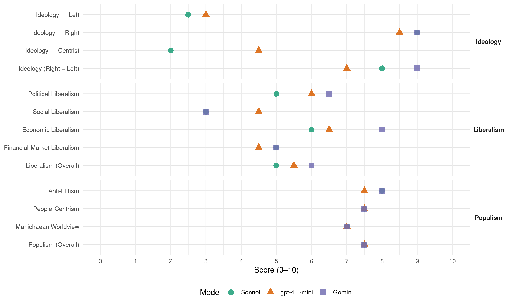

UKIP (United Kingdom, 2015)
manifesto_id 51951_201505
Get full text: This site shows derived annotations and short verbatim quotes only. The full manifesto text is © Manifesto Project / WZB — obtain it via manifesto-project.wzb.eu using the manifesto_id above.
Headline scores
| Dimension | Sonnet | gpt-4.1-mini | Gemini |
|---|---|---|---|
| Populism (Overall) | 7.5 | 7.5 | 7.5 |
| Anti-Elitism | 8.0 | 7.5 | 8.0 |
| People-Centrism | 7.5 | 7.5 | 7.5 |
| Manichaean Worldview | 7.0 | 7.0 | 7.0 |
| Ideology (Right − Left) | 8.0 | 7.0 | 9.0 |
| Liberalism (Overall) | 5.0 | 5.5 | 6.0 |
| Political Liberalism | 5.0 | 6.0 | 6.5 |
| Social Liberalism | 3.0 | 4.5 | 3.0 |
| Economic Liberalism | 6.0 | 6.5 | 8.0 |
| Financial-Market Liberalism | 5.0 | 4.5 | 5.0 |
Evidence per dimension
Economic Liberalism
Gemini · score 8.0 · verified · chunk 1
“restoring incentives for workers by cutting taxes”
Our approach to the economy revolves around restoring incentives for workers by cutting taxes and ending the current ‘open door’ arrangement
Gemini · score 8.0 · verified · chunk 2
“help you be competitive in Britain and the global market”
“If you run a small business, then UKIP is the party for you. We will do everything we can to help you be competitive in Britain and the global market.” At the start of last year, there were an estimated
gpt-4.1-mini · score 6.0 · verified · chunk 1
“UKIP will finance a fairer tax system and fund our public spending proposals by sharp reductions in spending on specified public sector programmes”
UKIP will finance a fairer tax system and fund our public spending proposals by sharp reductions in spending on specified public sector programmes. By the end of the next parliament we will: Save £9 billion a year in direct net contributions to the European Union budget by leaving the EU.
gpt-4.1-mini · score 7.0 · verified · chunk 2
“UKIP will repeal EU Regulations and Directives that stifle business growth”
UKIP will repeal EU Regulations and Directives that stifle business growth We will also allow traders to sell in whatever quantities or measures they like. Only UKIP will get us out of the EU and release enterprise from the strangulation excessive regulation.
Sonnet · score 6.0 · verified · chunk 1
“cutting taxes and ending the current ‘open door’ arrangement”
Our approach to the economy revolves around restoring incentives for workers by cutting taxes and ending the current ‘open door’ arrangement for European labour
Sonnet · score 6.0 · verified · chunk 2
“release enterprise from the strangulation excessive regulation”
Only UKIP will get us out of the EU and release enterprise from the strangulation excessive regulation.
Financial-Market Liberalism
Gemini · score 5.0 · verified · chunk 2
“improve access to trade credit insurance”
fearful of bad debts. To address both this issues, UKIP will pilot a scheme to improve access to trade credit insurance to small businesses. This insurance already exists in the market, but can prove restrictive
gpt-4.1-mini · score 4.0 · verified · chunk 1
“We will bring this unfairness to an end. By restoring British tax sovereignty, which we lost when we signed up to the EU, we will end the practice of businesses paying tax in whichever EU or associated country they choose”
It is grossly unfair that a few multi-national corporations have been able to access all the benefits of our thriving British consumer market without making a proper contribution to the costs of British society. The public has every right to be angry about this. UKIP will not allow large companies to continue getting away with paying zero or negligible corporation tax in Britain. We will bring this unfairness to an end. By restoring British tax sovereignty, which we lost when we signed up to the EU, we will end the practice of businesses paying tax in whichever EU or associated country they choose.
gpt-4.1-mini · score 5.0 · verified · chunk 2
“UKIP will pilot a scheme to improve access to trade credit insurance to small businesses”
UKIP will pilot a scheme to improve access to trade credit insurance to small businesses. This insurance already exists in the market, but can prove restrictive for smaller companies, especially in certain business sectors.
Sonnet · score 4.0 · verified · chunk 1
“make it a criminal offence to cold call someone in respect of their pension”
To prevent mis-selling, UKIP will make it a criminal offence to cold call someone in respect of their pension arrangements
Sonnet · score 6.0 · verified · chunk 2
“improve access to trade credit insurance”
UKIP will pilot a scheme to improve access to trade credit insurance to small businesses. This insurance already exists in the market
Political Liberalism
Gemini · score 7.0 · verified · chunk 1
“make our own laws, in our own Political”
If you believe that we are big enough to make our own laws, in our own Political party manifestos are usually filled with arbitrary
Gemini · score 6.0 · verified · chunk 2
“uphold the principle of ‘innocent until proven guilty’”
‘INNOCENT UNTIL PROVEN GUILTY’ UKIP will fully uphold the principle of ‘innocent until proven guilty.’ This tenet of law is fundamental to British justice and UKIP will reverse
gpt-4.1-mini · score 6.0 · verified · chunk 1
“We will introduce a ‘Licence to Manage’ as a statutory requirement to prevent incompetent, negligent or bullying managers being moved sideways or re-employed by the NHS”
We think NHS managers should be subject to disciplinary oversight in the same way as doctors and nurses who are regulated by the General Medical Council and the Nursing and Midwifery Council. We will introduce a ‘Licence to Manage’ as a statutory requirement to prevent incompetent, negligent or bullying managers being moved sideways or re-employed by the NHS as external consultants.
gpt-4.1-mini · score 6.0 · verified · chunk 2
“We will remove ourselves from the jurisdiction of the European Court of Human Rights”
We will remove ourselves from the jurisdiction of the European Court of Human Rights: the Strasbourg Court whose interpretation of the European Convention of Human Rights has been known to put the rights of criminals above those of victims.
Sonnet · score 5.0 · verified · chunk 1
“improving democratic accountability”
UKIP believes we can make considerable savings at the same time as improving democratic accountability. These savings include: Reducing the size of the House of Commons
Sonnet · score 4.0 · mixed · chunk 2
“repeal Labour’s Human Rights legislation”
We will also repeal Labour’s Human Rights legislation. It has given European judges far too much power over British law making and law enforcement
Liberalism (Overall)
Gemini · score 6.0 · verified · chunk 1
“restoring incentives for workers by cutting taxes”
Our approach to the economy revolves around restoring incentives for workers by cutting taxes and ending the current ‘open door’ arrangement
Gemini · score 6.0 · verified · chunk 2
“help you be competitive in Britain and the global market”
“If you run a small business, then UKIP is the party for you. We will do everything we can to help you be competitive in Britain and the global market.” At the start of last year, there were an estimated
gpt-4.1-mini · score 5.0 · verified · chunk 1
“UKIP will finance a fairer tax system and fund our public spending proposals by sharp reductions in spending on specified public sector programmes”
UKIP will finance a fairer tax system and fund our public spending proposals by sharp reductions in spending on specified public sector programmes. By the end of the next parliament we will: Save £9 billion a year in direct net contributions to the European Union budget by leaving the EU.
gpt-4.1-mini · score 6.0 · verified · chunk 2
“UKIP will repeal EU Regulations and Directives that stifle business growth”
UKIP will repeal EU Regulations and Directives that stifle business growth We will also allow traders to sell in whatever quantities or measures they like. Only UKIP will get us out of the EU and release enterprise from the strangulation excessive regulation.
Sonnet · score 5.0 · verified · chunk 1
“restoring incentives for workers by cutting taxes”
Our approach to the economy revolves around restoring incentives for workers by cutting taxes and ending the current ‘open door’ arrangement for European labour
Sonnet · score 5.0 · mixed · chunk 2
“Excessive regulations stream out of Brussels”
Excessive regulations stream out of Brussels, adding huge administrative and financial burdens to the challenges already faced by small businesses.
Anti-Elitism
Gemini · score 8.0 · verified · chunk 1
“the establishment parties have repeatedly and knowingly raised”
health service and living standards – the establishment parties have repeatedly and knowingly raised the expectations of the public, only to let us
Gemini · score 8.0 · verified · chunk 2
“The liberal metropolitan elite often tells us”
are a remarkable people. We have helped shape the modern world. Britain is more than just a star on someone else’s flag. The liberal metropolitan elite often tells us patriotism is wrong, that it is something to be discouraged. We are told we should be ashamed of our past; that we must apologize
gpt-4.1-mini · score 8.0 · verified · chunk 1
“rebalance power from large corporations and big government institutions and put it back into the hands of the people”
…seize the opportunity for real change in our politics; rebalance power from large corporations and big government institutions and put it back into the hands of the people of this country, then there really is only one choice.
gpt-4.1-mini · score 7.0 · verified · chunk 2
“unscrupulous politicians, fully aware of the truth of the matter, still attempt to deceive”
The Director of NIESR repudiated their claims, describing their efforts as ‘a wilful distortion of the facts.’ Sadly, unscrupulous politicians, fully aware of the truth of the matter, still attempt to deceive. The jobs of British people - and the jobs of the five million Europeans who work here – are not dependent on EU membership and will be safe when we leave the EU.
Sonnet · score 8.0 · verified · chunk 1
“establishment parties have repeatedly and knowingly raised”
on the major issues of the day - immigration, the economy, our health service and living standards – the establishment parties have repeatedly and knowingly raised the expectations of the public, only to let us down
Sonnet · score 8.0 · verified · chunk 2
“unscrupulous politicians, fully aware of the truth”
Sadly, unscrupulous politicians, fully aware of the truth of the matter, still attempt to deceive. The jobs of British people
Ideology — Centrist
gpt-4.1-mini · score 4.0 · verified · chunk 1
“UKIP is the only party that is truly willing to face up to the harsh reality of how health tourism and treating those ineligible is sapping the NHS of funds”
UKIP is the only party that is truly willing to face up to the harsh reality of how health tourism and treating those ineligible is sapping the NHS of funds. The other parties have their heads stuck well and truly in the sand.
gpt-4.1-mini · score 5.0 · verified · chunk 2
“UKIP believes in Britain. We believe Britain can be a strong, proud, independent, sovereign nation”
UKIP believes in Britain. We believe Britain can be a strong, proud, independent, sovereign nation. We are the envy of the world for our rich history, our art and our architecture, our monarchy.
Sonnet · score 2.0 · verified · chunk 1
“believing in our country”
you will find serious, fully-costed policies that reflect what our party is all about: believing in our country
Sonnet · score 2.0 · mixed · chunk 2
“Parliament is accountable to the people”
UKIP wants far reaching political reform to ensure that government answers properly to Parliament and that Parliament is accountable to the people.
Ideology — Left
gpt-4.1-mini · score 3.0 · verified · chunk 1
“rebalance power from large corporations and big government institutions and put it back into the hands of the people”
…seize the opportunity for real change in our politics; rebalance power from large corporations and big government institutions and put it back into the hands of the people of this country, then there really is only one choice.
gpt-4.1-mini · score 3.0 · verified · chunk 2
“redistribute payments away from wealthy landowners and large, often intensively farmed holdings”
We can also redistribute payments away from wealthy landowners and large, often intensively farmed holdings, in favour of smaller food producers and family farms.
Sonnet · score 3.0 · verified · chunk 1
“multi-national corporations…paying zero or negligible corporation tax”
It is grossly unfair that a few multi-national corporations have been able to access all the benefits of our thriving British consumer market without making a proper contribution
Sonnet · score 2.0 · verified · chunk 2
“redistribute payments away from wealthy landowners”
We can also redistribute payments away from wealthy landowners and large, often intensively farmed holdings, in favour of smaller food producers and family farms.
Ideology (Right − Left)
Gemini · score 9.0 · verified · chunk 1
“sovereign right to control our own borders”
parliament; if you believe we should have the sovereign right to control our own borders; if you believe that we should be fiscally
Gemini · score 9.0 · verified · chunk 2
“promote a unifying British culture”
REINVIGORATING BRITISH CULTURE AND VALUES UKIP will promote a unifying British culture, open to anyone who wishes to identify with Britain and British values, regardless of
gpt-4.1-mini · score 7.0 · verified · chunk 1
“rebalance power from large corporations and big government institutions and put it back into the hands of the people”
…seize the opportunity for real change in our politics; rebalance power from large corporations and big government institutions and put it back into the hands of the people of this country, then there really is only one choice.
gpt-4.1-mini · score 7.0 · verified · chunk 2
“UKIP believes in Britain. We believe Britain can be a strong, proud, independent, sovereign nation”
UKIP believes in Britain. We believe Britain can be a strong, proud, independent, sovereign nation. We are the envy of the world for our rich history, our art and our architecture, our monarchy.
Sonnet · score 8.0 · verified · chunk 1
“Take back control of our borders”
TO REFORM OUR IMMIGRATION SYSTEM UKIP WILL: Take back control of our borders Put a five-year moratorium on immigration for unskilled workers
Sonnet · score 8.0 · verified · chunk 2
“We reject multiculturalism, the doctrine whereby”
We reject multiculturalism, the doctrine whereby different ethnic and religious groups are encouraged to maintain all aspects of their cultures, instead of integrating into our majority culture
Ideology — Right
Gemini · score 9.0 · verified · chunk 1
“sovereign right to control our own borders”
parliament; if you believe we should have the sovereign right to control our own borders; if you believe that we should be fiscally
Gemini · score 9.0 · verified · chunk 2
“promote a unifying British culture”
REINVIGORATING BRITISH CULTURE AND VALUES UKIP will promote a unifying British culture, open to anyone who wishes to identify with Britain and British values, regardless of
gpt-4.1-mini · score 9.0 · verified · chunk 1
“If you believe that we are big enough to make our own laws, in our own parliament; if you believe we should have the sovereign right to control our own borders”
…Now, there is something to vote for, if you believe in Britain. have to do is vote for it. If you believe that we are big enough to make our own laws, in our own parliament; if you believe we should have the sovereign right to control our own borders; if you believe that we should be fiscally responsible…
gpt-4.1-mini · score 8.0 · verified · chunk 2
“Allow employers to prioritise British citizens for jobs”
Allow employers to prioritise British citizens for jobs Maintain suitable levels of immigration to fill the skills’ gap Cut fuel bills through the abolition of ‘green levies’ to cut business costs.
Sonnet · score 9.0 · verified · chunk 1
“uncontrolled, politically-driven immigration that has been promoted”
What we do have a problem with is the uncontrolled, politically-driven immigration that has been promoted and sustained by Labour and the Conservatives
Sonnet · score 9.0 · verified · chunk 2
“Allow employers to prioritise British citizens”
Allow employers to prioritise British citizens for jobs. Maintain suitable levels of immigration to fill the skills’ gap
Manichaean Worldview
Gemini · score 7.0 · verified · chunk 1
“their cowardice binds our country to a failing”
prosperous, healthy, international future for Britain, their cowardice binds our country to a failing super-state that tells us what to do
Gemini · score 7.0 · verified · chunk 2
“unscrupulous politicians, fully aware of the truth”
Director of NIESR repudiated their claims, describing their efforts as ‘a wilful distortion of the facts.’ Sadly, unscrupulous politicians, fully aware of the truth of the matter, still attempt to deceive. The jobs of British people - and the jobs of the five million
gpt-4.1-mini · score 7.0 · verified · chunk 1
“Their cowardice binds our country to a failing super-state that tells us what to do and does not listen to what we want”
While we see a free, prosperous, healthy, international future for Britain, their cowardice binds our country to a failing super-state that tells us what to do and does not listen to what we want. Our manifesto also throws down the gauntlet to those who have ridiculed us…
gpt-4.1-mini · score 7.0 · verified · chunk 2
“The EU Common Fisheries Policy (CFP) was designed from the beginning to steal our fish”
The EU Common Fisheries Policy (CFP) was designed from the beginning to steal our fish. It has ravaged our fishing industry and caused catastrophic environmental damage. Fishing grounds have been so over-fished that some are at the point of collapse.
Sonnet · score 7.0 · verified · chunk 1
“enemies of the people”
Their ‘green’ agenda does not make them friends of the earth; it makes them enemies of the people.
Sonnet · score 7.0 · verified · chunk 2
“a wilful distortion of the facts”
The Director of NIESR repudiated their claims, describing their efforts as ‘a wilful distortion of the facts.’ Sadly, unscrupulous politicians
People-Centrism
Gemini · score 8.0 · verified · chunk 1
“put it back into the hands of the people”
institutions and put it back into the hands of the people of this country, then there really is only one
Gemini · score 7.0 · verified · chunk 2
“bring back power to the people”
LOCAL GOVERNMENT “UKIP will bring back power to the people with common sense, local policies which will make people’s lives easier. UKIP councillors know who is boss
gpt-4.1-mini · score 9.0 · verified · chunk 1
“believe in Britain May 7th presents the people of Britain with an incredible opportunity”
Believe In Britain May 7th presents the people of Britain with an incredible opportunity. For the first time in 100 years, there is real change on the horizon. All you Now, there is something to vote for, if you believe in Britain.
gpt-4.1-mini · score 6.0 · verified · chunk 2
“UKIP believes in Britain, in its entrepreneurs, in its teams of sole traders”
UKIP believes in Britain, in its entrepreneurs, in its teams of sole traders, freelancers and self-starters and will back them whenever and however we can.
Sonnet · score 8.0 · verified · chunk 1
“rebalance power…back into the hands of the people”
rebalance power from large corporations and big government institutions and put it back into the hands of the people of this country
Sonnet · score 7.0 · verified · chunk 2
“UKIP wants far reaching political reform”
UKIP wants far reaching political reform to ensure that government answers properly to Parliament and that Parliament is accountable to the people.
Populism (Overall)
Gemini · score 8.0 · verified · chunk 1
“successive governments were no longer representing the will”
this is where UKIP came from: a feeling that successive governments were no longer representing the will of the British people.
Gemini · score 7.0 · verified · chunk 2
“reconnect politics with the public”
Instead of answering outward to their constituents, too many MPs only answer to other MPs in Westminster. We need fundamental change to reconnect politics with the public.” With party whips wielding so much power, Parliament has grown supine and often spineless.
gpt-4.1-mini · score 8.0 · verified · chunk 1
“rebalance power from large corporations and big government institutions and put it back into the hands of the people”
…seize the opportunity for real change in our politics; rebalance power from large corporations and big government institutions and put it back into the hands of the people of this country, then there really is only one choice.
gpt-4.1-mini · score 7.0 · verified · chunk 2
“unscrupulous politicians, fully aware of the truth of the matter, still attempt to deceive”
The Director of NIESR repudiated their claims, describing their efforts as ‘a wilful distortion of the facts.’ Sadly, unscrupulous politicians, fully aware of the truth of the matter, still attempt to deceive. The jobs of British people - and the jobs of the five million Europeans who work here – are not dependent on EU membership and will be safe when we leave the EU.
Sonnet · score 8.0 · verified · chunk 1
“successive governments were no longer representing the will”
a feeling that successive governments were no longer representing the will of the British people
Sonnet · score 7.0 · verified · chunk 2
“Politics in Britain has become a cartel”
“Politics in Britain has become a cartel. Many MPs only became MPs by working in the office of MPs. Instead of answering outward to their constituents
Social Liberalism